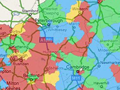

Example of how to make the overlay from MapTiler tiles.
Requirement: Tileset Control
Usage instructions:
Add this script to map GameObject.
Place tiles from MapTiler in format «Resources / Online Maps Overlay / {ZOOM} / {X} / {Y}.png».
Add this script to map GameObject.
Place tiles from MapTiler in format «Resources / Online Maps Overlay / {ZOOM} / {X} / {Y}.png».
TilesetMapTilerOverlayExample.cs
/* INFINITY CODE 2013-2016 */
/* http://www.infinity-code.com */
using UnityEngine;
namespace InfinityCode.OnlineMapsExamples
{
[AddComponentMenu("Infinity Code/Online Maps/Examples (API Usage)/TilesetMapTilerOverlayExample")]
public class TilesetMapTilerOverlayExample : MonoBehaviour
{
internal class CData
{
public Texture texture;
}
// Overlay transparency
[Range(0, 1)] public float alpha = 1;
private OnlineMapsVector2i _bufferPosition;
private Mesh overlayMesh;
private Collider tilesetCollider;
private Shader shader;
private Vector2[] uv;
private Vector3[] vertices;
private int[] triangles;
private MeshRenderer meshRenderer;
private float _alpha;
private static OnlineMaps api
{
get { return OnlineMaps.instance; }
}
private OnlineMapsVector2i bufferPosition
{
get
{
if (_bufferPosition == null)
{
const int s = OnlineMapsUtils.tileSize;
int countX = api.width / s + 2;
int countY = api.height / s + 2;
_bufferPosition = OnlineMapsUtils.LatLongToTile(api.position, api.zoom);
_bufferPosition.x -= countX / 2;
_bufferPosition.y -= countY / 2;
int maxY = (2 << api.zoom) / 2;
if (_bufferPosition.y < 0) _bufferPosition.y = 0;
if (_bufferPosition.y >= maxY - countY - 1) _bufferPosition.y = maxY - countY - 1;
}
return _bufferPosition;
}
}
private void InitMapSubMesh(ref Vector3[] normals, int x, int y, int w, int h, Vector2 subMeshSize,
int subMeshVX, int subMeshVZ)
{
int i = (x + y * w) * subMeshVX * subMeshVZ * 4;
Vector2 cellSize = new Vector2(subMeshSize.x / subMeshVX, subMeshSize.y / subMeshVZ);
float sx = (x > 0 && x < w - 1) ? cellSize.x : 0;
float sy = (y > 0 && y < h - 1) ? cellSize.y : 0;
float nextY = subMeshSize.y * (y - 1);
float uvX = 1f / subMeshVX;
float uvZ = 1f / subMeshVZ;
for (int ty = 0; ty < subMeshVZ; ty++)
{
float nextX = -subMeshSize.x * (x - 1);
for (int tx = 0; tx < subMeshVX; tx++)
{
int ci = (tx + ty * subMeshVX) * 4 + i;
vertices[ci] = new Vector3(nextX, 0, nextY);
vertices[ci + 1] = new Vector3(nextX - sx, 0, nextY);
vertices[ci + 2] = new Vector3(nextX - sx, 0, nextY + sy);
vertices[ci + 3] = new Vector3(nextX, 0, nextY + sy);
uv[ci] = new Vector2(1 - uvX * (tx + 1), 1 - uvZ * ty);
uv[ci + 1] = new Vector2(1 - uvX * tx, 1 - uvZ * ty);
uv[ci + 2] = new Vector2(1 - uvX * tx, 1 - uvZ * (ty + 1));
uv[ci + 3] = new Vector2(1 - uvX * (tx + 1), 1 - uvZ * (ty + 1));
normals[ci] = Vector3.up;
normals[ci + 1] = Vector3.up;
normals[ci + 2] = Vector3.up;
normals[ci + 3] = Vector3.up;
nextX -= sx;
}
nextY += sy;
}
}
private void InitMapSubMeshTriangles(ref Material[] materials, int x, int y, int w, int h, int subMeshVX,
int subMeshVZ, Shader tileShader)
{
if (triangles == null) triangles = new int[subMeshVX * subMeshVZ * 6];
int i = (x + y * w) * subMeshVX * subMeshVZ * 4;
for (int ty = 0; ty < subMeshVZ; ty++)
{
for (int tx = 0; tx < subMeshVX; tx++)
{
int ci = (tx + ty * subMeshVX) * 4 + i;
int ti = (tx + ty * subMeshVX) * 6;
triangles[ti] = ci;
triangles[ti + 1] = ci + 1;
triangles[ti + 2] = ci + 2;
triangles[ti + 3] = ci;
triangles[ti + 4] = ci + 2;
triangles[ti + 5] = ci + 3;
}
}
overlayMesh.SetTriangles(triangles, x + y * w);
Material material = new Material(tileShader);
if (api.defaultTileTexture != null) material.mainTexture = api.defaultTileTexture;
materials[x + y * w] = material;
}
private void Start()
{
// Create overlay container
GameObject overlayContainer = new GameObject("OverlayContainer");
overlayContainer.transform.parent = transform;
overlayContainer.transform.localPosition = Vector2.zero;
// Init overlay material
meshRenderer = overlayContainer.AddComponent<MeshRenderer>();
MeshFilter meshFilter = overlayContainer.AddComponent<MeshFilter>();
shader = Shader.Find("Transparent/Diffuse");
overlayMesh = meshFilter.sharedMesh = new Mesh();
overlayMesh.name = "Overlay Mesh";
overlayMesh.MarkDynamic();
int w1 = api.tilesetWidth / OnlineMapsUtils.tileSize;
int h1 = api.tilesetHeight / OnlineMapsUtils.tileSize;
int w = w1 + 2;
int h = h1 + 2;
int subMeshVX = 1;
int subMeshVZ = 1;
vertices = new Vector3[w * h * subMeshVX * subMeshVZ * 4];
uv = new Vector2[w * h * subMeshVX * subMeshVZ * 4];
Vector3[] normals = new Vector3[w * h * subMeshVX * subMeshVZ * 4];
Material[] materials = new Material[w * h];
overlayMesh.subMeshCount = w * h;
Vector2 subMeshSize = new Vector2(api.tilesetSize.x / w1, api.tilesetSize.y / h1);
for (int y = 0; y < h; y++)
{
for (int x = 0; x < w; x++)
{
InitMapSubMesh(ref normals, x, y, w, h, subMeshSize, subMeshVX, subMeshVZ);
}
}
overlayMesh.vertices = vertices;
overlayMesh.uv = uv;
overlayMesh.normals = normals;
for (int y = 0; y < h; y++)
{
for (int x = 0; x < w; x++)
{
InitMapSubMeshTriangles(ref materials, x, y, w, h, subMeshVX, subMeshVZ, shader);
}
}
triangles = null;
meshRenderer.materials = materials;
// Subscribe to events
api.OnMapUpdated += UpdateMesh;
// Init mesh
UpdateMesh();
}
private void Update()
{
if (alpha != _alpha)
{
UpdateMesh();
}
}
private void UpdateMesh()
{
_bufferPosition = null;
_alpha = alpha;
int w1 = api.tilesetWidth / OnlineMapsUtils.tileSize;
int h1 = api.tilesetHeight / OnlineMapsUtils.tileSize;
int subMeshVX = 1;
int subMeshVZ = 1;
Vector2 subMeshSize = new Vector2(api.tilesetSize.x / w1, api.tilesetSize.y / h1);
Vector2 topLeftPosition = api.topLeftPosition;
Vector2 bottomRightPosition = api.bottomRightPosition;
Vector2 tlPos = OnlineMapsUtils.LatLongToTilef(topLeftPosition, api.zoom);
Vector2 pos = tlPos - bufferPosition;
int maxX = (2 << api.zoom) / 2;
if (pos.x >= maxX) pos.x -= maxX;
Vector3 startPos = new Vector3(subMeshSize.x * pos.x, 0, -subMeshSize.y * pos.y);
int w = w1 + 2;
int h = h1 + 2;
for (int y = 0; y < h; y++)
{
for (int x = 0; x < w; x++)
{
UpdateMapSubMesh(x, y, w, h, subMeshSize, subMeshVX, subMeshVZ, startPos, 0, topLeftPosition,
bottomRightPosition);
}
}
overlayMesh.vertices = vertices;
overlayMesh.uv = uv;
for (int i = 0; i < overlayMesh.subMeshCount; i++) overlayMesh.SetTriangles(overlayMesh.GetTriangles(i), i);
overlayMesh.RecalculateBounds();
}
private void UpdateMapSubMesh(int x, int y, int w, int h, Vector2 subMeshSize, int subMeshVX, int subMeshVZ,
Vector3 startPos, float yScale, Vector2 topLeftPosition, Vector2 bottomRightPosition)
{
int mi = x + y * w;
int i = mi * subMeshVX * subMeshVZ * 4;
Vector2 cellSize = new Vector2(subMeshSize.x / subMeshVX, subMeshSize.y / subMeshVZ);
float uvX = 1f / subMeshVX;
float uvZ = 1f / subMeshVZ;
int bx = x + bufferPosition.x;
int by = y + bufferPosition.y;
int maxX = (2 << api.zoom) / 2;
if (bx >= maxX) bx -= maxX;
if (bx < 0) bx += maxX;
OnlineMapsTile tile = null;
lock (OnlineMapsTile.tiles)
{
foreach (OnlineMapsTile t in OnlineMapsTile.tiles)
{
if (t.zoom == api.zoom && t.x == bx && t.y == by)
{
tile = t;
break;
}
}
}
OnlineMapsTile currentTile = tile;
Texture texture = null;
if (tile != null && tile.texture != null)
{
CData data = currentTile.customData as CData;
if (data == null)
{
currentTile.customData = data = new CData();
texture =
data.texture =
Resources.Load<Texture2D>(string.Format("OnlineMapsOverlay/{0}/{1}/{2}", tile.zoom, tile.x,
tile.y));
}
else texture = data.texture;
}
for (int ty = 0; ty < subMeshVZ; ty++)
{
float uvY1 = 1 - uvZ * ty;
float uvY2 = 1 - uvZ * (ty + 1);
float z1 = startPos.z + y * subMeshSize.y + ty * cellSize.y;
float z2 = z1 + cellSize.y;
if (z1 < 0) z1 = 0;
if (z1 > api.tilesetSize.y) z1 = api.tilesetSize.y;
if (z2 < 0) z2 = 0;
if (z2 > api.tilesetSize.y) z2 = api.tilesetSize.y;
if (z1 == 0 && z2 > 0) uvY1 = Mathf.Lerp(uvY1, uvY2, 1 - z2 / cellSize.y);
else if (z1 < api.tilesetSize.y && z2 == api.tilesetSize.y)
uvY2 = Mathf.Lerp(uvY1, uvY2, (api.tilesetSize.y - z1) / cellSize.y);
for (int tx = 0; tx < subMeshVX; tx++)
{
float uvX1 = uvX * tx;
float uvX2 = uvX * (tx + 1);
float x1 = startPos.x - x * subMeshSize.x - tx * cellSize.x;
float x2 = x1 - cellSize.x;
if (x1 > 0) x1 = 0;
if (x1 < -api.tilesetSize.x) x1 = -api.tilesetSize.x;
if (x2 > 0) x2 = 0;
if (x2 < -api.tilesetSize.x) x2 = -api.tilesetSize.x;
if (x1 == 0 && x2 < 0) uvX1 = Mathf.Lerp(uvX2, uvX1, -x2 / cellSize.x);
else if (x1 > -api.tilesetSize.x && x2 == -api.tilesetSize.x)
uvX2 = Mathf.Lerp(uvX2, uvX1, 1 - (x1 + api.tilesetSize.x) / cellSize.x);
int ci = (tx + ty * subMeshVX) * 4 + i;
vertices[ci] = new Vector3(x1, 0, z1);
vertices[ci + 1] = new Vector3(x2, 0, z1);
vertices[ci + 2] = new Vector3(x2, 0, z2);
vertices[ci + 3] = new Vector3(x1, 0, z2);
uv[ci] = new Vector2(uvX1, uvY1);
uv[ci + 1] = new Vector2(uvX2, uvY1);
uv[ci + 2] = new Vector2(uvX2, uvY2);
uv[ci + 3] = new Vector2(uvX1, uvY2);
}
}
Material material = meshRenderer.materials[mi];
if (tile != null)
{
if (material.mainTexture != texture) material.mainTexture = texture;
Color color = material.color;
color.a = (texture != null) ? alpha : 0;
material.color = color;
}
else
{
Color color = material.color;
color.a = 0;
material.color = color;
}
}
}
}